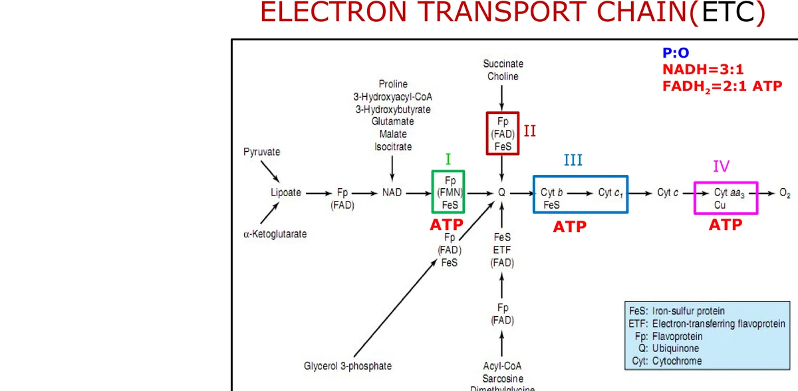
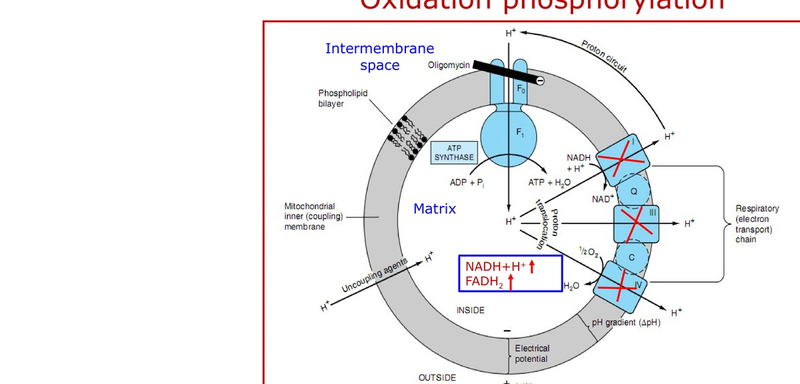
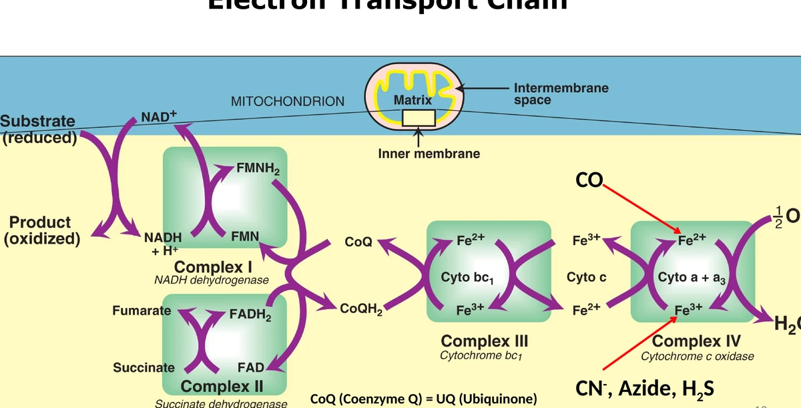
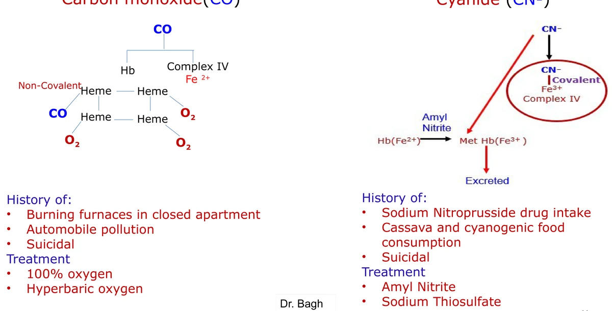
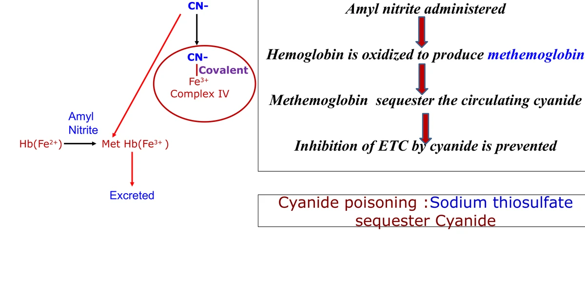
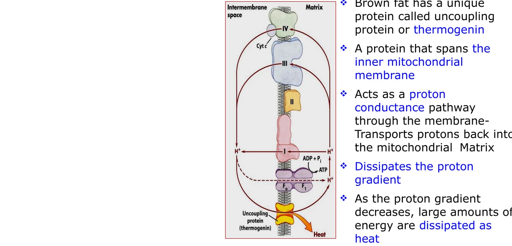

Lecture 03 — Electron Transport Chain
VS boxes = pairs that are routinely confused; the underlined red word is the single feature that tells them apart.
Orientation / The whole lecture on one page
Catabolism fills the matrix with reduced coenzymes. Their electrons walk the inner-membrane chain to oxygen while Complexes I, III and IV push protons out and Complex V returns them to make ATP. Inhibitors break electron flow or the return path; uncouplers short-circuit the gradient so energy leaves as heat. Learn the normal circuit first — every poison in Objective 5 lesions one arrow on this map — then drill the oxygen-consumption discriminator until inhibitor versus uncoupler is automatic at exam speed.
Objective 1 / Reducing equivalents, E0′, ΔE0′, and ΔG0′
Biological oxidation
Oxidation is gain of O2 or loss of H2. In the body the useful form is loss of hydrogen as 2H+ + 2e− — a reducing equivalent is a proton plus an electron. Nothing is oxidized in isolation: one intermediate loses reducing equivalents while another gains them. The enzymes are oxidoreductases, subclass dehydrogenases. Biological oxidation is exergonic; the free energy (Gibbs) is trapped stepwise as ATP rather than released in one burst.
Macronutrients (carbohydrate, lipid, protein) are oxidized; coenzymes are reduced. Micronutrients supply those coenzymes — NAD+/NADP+ from vitamin B3 (niacin) and FAD from vitamin B2 (riboflavin) — same cofactor map as Lecture 01; do not re-learn the vitamin table here. NADH is an indirect reflection of ATP status; NADPH is not (it feeds anabolism as a hydrogen source, with acetyl-CoA as the carbon source and insulin as the major anabolic hormone — exceptions come later). NAD+ accepts reducing equivalents more often than FAD, so more NADH than FADH2 accumulates in the matrix.
Reduced coenzymes enter the ETC to regenerate NAD+/FAD and pass their reducing equivalents to O2, forming water. Without that regeneration, upstream dehydrogenases stop for want of an oxidized acceptor. Mitochondria, the ETC, and oxygen are all required to make ATP this way — coupling oxidation to phosphorylation is oxidative phosphorylation.
Example half-reactions: ethanol is the reductant (gets oxidized) and acetaldehyde the oxidant (gets reduced); NADH–NAD+ and acetaldehyde–ethanol are redox pairs. Electrons move from donor to acceptor only when the acceptor’s redox potential is higher.
Redox potential
| E0′Standard redox potential of one redox pair — its affinity for electrons at 1 M oxidant and reductant, pH 7. Low E0′ = low affinity; high E0′ = high affinity. | ΔE0′The difference between two pairs: ΔE0′ = E0′(acceptor) − E0′(donor). The acceptor’s potential is always higher; spontaneous transfer gives a positive ΔE0′. |
| Redox pair | E0′ (V) | Role |
|---|---|---|
| NAD+ / NADH | −0.32 | entry at Complex I |
| FMN / FMNH2 | −0.30 | inside Complex I |
| FAD / FADH2 | −0.22 | entry at Complex II |
| Cytochrome b | +0.07 | Complex III |
| Coenzyme Q | +0.10 | mobile carrier |
| Cytochrome c1 | +0.23 | Complex III |
| Cytochrome c | +0.25 | mobile carrier |
| Cytochrome a | +0.29 | Complex IV |
| ½ O2 / H2O | +0.82 | terminal acceptor |
FAD/FADH2 sits 0.10 V above NAD+/NADH, so FADH2 starts lower on the staircase and pays for a smaller drop — the reason its ATP yield is lower. Cytochrome b at +0.07 V sits slightly below CoQ at +0.10 V in the table yet participates inside Complex III’s Q-cycle branch; the examinable claim is the overall negative-to-positive climb ending at O2.
From voltage to free energy
The two conventions run opposite ways: a positive voltage gap means the transfer wants to happen, but thermodynamics marks spontaneity with a negative ΔG. The minus sign is the translation, not a trick. Electron-transfer reactions are therefore a free-energy source and can be wired in series — like an electrical circuit — in order of increasing redox potential.
The thermodynamics primer from the same session supplies the neighboring relations: ΔG = ΔH − TΔS (free energy = enthalpy minus the temperature-weighted entropy term), ΔG°′ = −RT ln Keq (or −RT log Keq as written on the interactive slide), and ATP hydrolysis ΔG°′ = −7.3 kcal/mol. ΔG is the actual free-energy change and can be moved by concentrations; ΔG°′ is the standard value at 1 M reactants and products, pH 7, 25 °C, 1 atm — a constant of the reaction. Negative ΔG = exergonic (spontaneous); zero = equilibrium; positive = endergonic (needs input). Do not confuse those words with exothermic/endothermic (heat). Unfavorable steps proceed when coupled to favorable ones so the sum of ΔG°′ values is negative — ATP’s phosphoanhydride hydrolysis is the usual coupler (also GTP, UTP, CTP in other pathways).
Objective 2 / Carriers of reducing equivalents and the energy yield from NADH
Mitochondrial geography
The mitochondrion is the major energy-generating compartment of most eukaryotic cells. It has a permeable outer membrane, a semipermeable inner membrane folded into cristae (surface area for many copies of the chain), a soluble matrix, and an intermembrane space. Reducing equivalents are generated in the matrix by the TCA cycle — the common final oxidation pathway for carbohydrate, lipid and protein. Electron transport and ATP synthesis sit in the inner membrane, which is impermeable to H+. That impermeability is what makes a pumped proton stay outside until it returns through ATP synthase; uncouplers destroy exactly this property.
Mitochondria carry their own DNA and ribosomes. mtDNA is maternally inherited and in humans encodes 13 proteins of the ETC (of roughly ninety polypeptides needed for oxidative phosphorylation; the rest are nuclear). Matrix NADH and FADH2 have a short walk to the chain on the same organelle’s inner membrane.
An affected mother transmits an mtDNA ETC mutation to all children; an affected father transmits it to none. High-ATP tissues — nerve and muscle — fail first.
Shuttles for cytosolic NADH
Cytosolic NADH (glycolysis is the prototype) cannot cross the inner membrane. The cell does not move the NADH molecule; it moves the reducing equivalents through a shuttle and reloads them onto an acceptor on the matrix side.
| Malate–aspartateCytosolic oxaloacetate is reduced to malate, malate enters the matrix, and matrix malate dehydrogenase regenerates NADH → enters at Complex I → 3 ATP per cytosolic NADH. | Glycerol phosphateCytosolic NADH reduces DHAP to glycerol 3-phosphate; the mitochondrial FAD-dependent dehydrogenase feeds FADH2-level electrons to CoQ, bypassing Complex I → 2 ATP per cytosolic NADH. |
Which shuttle a tissue uses changes the ATP tally from cytosolic NADH and therefore the net yield from glucose — carry that difference into Objective 4’s arithmetic. Heart and liver rely heavily on malate–aspartate; skeletal muscle and brain use more of the glycerol-phosphate route. The inner membrane’s impermeability to NADH is the same property that preserves the proton gradient — one design constraint, two consequences.
NAD+ is the preferred acceptor of reducing equivalents relative to FAD, so matrix NADH outnumbers FADH2 after a turn of the TCA cycle. Both still feed the same downstream chain once they reach CoQ, but they do not enter at the same complex.
Worked energy yield from NADH
Method: look at the overall equation, identify who accepts the reducing equivalents, subtract potentials, then apply ΔG0′ = −nFΔE0′.
Overall: NADH + H+ + ½O2 → NAD+ + H2O
- Donor pair: NAD+/NADH, E0′ = −0.32 V
- Acceptor pair: ½O2/H2O, E0′ = +0.82 V
- ΔE0′ = +0.82 − (−0.32) = +1.14 V
- ΔG0′ = −(2)(23.06)(1.14) = −52.6 kcal/mol (n = 2 electrons — the common slip is using n = 1)
- ATP hydrolysis = −7.3 kcal/mol → 52.6 / 7.3 ≈ 7 ATP if 100% efficient
- Actual course yield = 3 ATP (~22 kcal captured ≈ 40% efficiency); the balance is heat
Read stems carefully: “thermodynamic maximum” or “if 100% efficient” means 7; “how many ATP does one NADH give” in this course means 3. Both numbers appear together because the gap — energy lost as heat — is the point.
Objective 3 / Sequence of ETC components and ROS production
Architecture
The ETC sits in the inner mitochondrial membrane: five fixed complexes (I–IV plus Complex V = ATP synthase = F0F1) and two mobile carriers. Components are ordered by increasing redox potential from negative toward positive across about 1.1 V. Electron flow is unidirectional — there is no reverse run of the chain under physiologic conditions.

| Component | Names / groups | Accepts from | Passes to | Pumps H+? | Inhibitors |
|---|---|---|---|---|---|
| ★ I | NADH dehydrogenase / NADH:Q oxidoreductase; FMN + 7 Fe–S; >25 chains (largest) | NADH | CoQ | Yes | Rotenone, amobarbital (barbiturates), piericidin A |
| ★ II | Succinate dehydrogenase / FADH2:Q oxidoreductase; FAD + 2 Fe–S; 4 chains | FADH2 (succinate → fumarate) | CoQ | No — not a coupling site | Malonate (competitive vs succinate), carboxin, TTFA |
| III | CoQH2:Cyt c oxidoreductase (bc1); Cyt b (b562, b566), Cyt c1, 1 Fe–S; 6 chains | CoQH2 | Cyt c | Yes | Antimycin A, dimercaprol (BAL) |
| IV | Cytochrome c oxidase; Cyt a + a3, each with Cu; 13 chains | Cyt c | ½O2 → H2O | Yes | CN−, azide, H2S, CO |
| CoQ | Ubiquinone; only lipid-soluble isoprenoid; cholesterol-synthesis intermediate | I and II | III | — | — |
| Cyt c | Water-soluble heme protein in intermembrane space | III | Cu of IV | — | — |
| ★ V | ATP synthase (F0F1) | H+ influx | ADP + Pi → ATP | No — uses the gradient downhill | Oligomycin (blocks H+ through F0) |
| Complex IFlavin is FMN; takes NADH; pumps. | Complex IIFlavin is FAD; takes FADH2/succinate; does not pump. |
| Coenzyme QLipid-soluble; mobile in the membrane; convergence of I and II. | Cytochrome cWater-soluble; mobile in the intermembrane space; feeds Complex IV. |
Complex III carries cytochrome bc1; Complex IV carries aa3. Only Complex IV requires copper — copper deficiency impairs it (same metal requirement as lysyl oxidase from the enzymes lecture). Cytochromes are heme proteins (types a, b, c). Inside Complex I, NADH reduces FMN to FMNH2, then electrons move through Fe–S centers to ubiquinone; Complex II likewise moves succinate-derived electrons through FAD and Fe–S to CoQ while converting succinate to fumarate (it is also a TCA enzyme). Know each complex’s one job first; internal gymnastics are not required beyond that path.
Other FAD-linked entries visible on the overview diagram also feed CoQ without Complex I: glycerol 3-phosphate dehydrogenase, and ETF-linked pathways from acyl-CoA (β-oxidation), sarcosine and dimethylglycine. NAD-linked matrix substrates include pyruvate, α-ketoglutarate, isocitrate, malate, glutamate and others listed on the overview.
Block a complex and apply the redox rule: the carrier it should reduce stays oxidized; donors upstream stay reduced. Inhibit Complex I → CoQ is not reduced from NADH. Inhibit Complex III → CoQH2 cannot be oxidized. Inhibit Complex IV → O2 is not reduced to water.
Coenzyme Q is also an intermediate of cholesterol synthesis — a useful cross-link when a stem mentions isoprenoids. Cytochrome c’s water solubility puts it in the intermembrane space, not buried in lipid, which is why it can shuttle between III and IV along the membrane surface.
ROS production in the ETC
Normal metabolism leaks a fraction of electrons to O2 before the controlled four-electron reduction at Complex IV, forming reactive oxygen species: superoxide (O2•−), hydrogen peroxide (H2O2), and hydroxyl radical (OH•). In the chain, superoxide leaks from FMN in Complex I and from ubiquinone in Complex III. Outside amplifiers include radiation, inflammation, high pO2, smog (O3, NO2), chemicals and drugs, reperfusion injury and aging. Unchecked ROS injure cells; defence is enzymatic.
| Enzyme | Reaction / role |
|---|---|
| Superoxide dismutase (SOD) | Converts superoxide to peroxide: 2 O2•− + 2H+ → H2O2 + O2 |
| Catalase | Splits peroxide: 2 H2O2 → 2 H2O + O2 |
| Glutathione peroxidase | Reduces peroxide using glutathione: H2O2 + 2 GSH → 2 H2O + GSSG |
Further links to NADPH-dependent detox and the hexose monophosphate shunt are developed in that later lecture; the examinable ETC facts here are the leak sites, the three ROS species, and the three defence enzymes. SOD handles the radical one-electron product; catalase and glutathione peroxidase clear the peroxide that SOD creates — learn them as a relay, not as three unrelated names.
Objective 4 / ATP synthesis and energy yield of the ETC
Oxidative vs substrate-level phosphorylation
Oxidative phosphorylation is ATP made with the ETC — it needs mitochondria and oxygen. Coupling oxidation to phosphorylation is the definition: electron flow drives the proton gradient, and the gradient drives ATP synthesis. Substrate-level phosphorylation makes ATP without the ETC when a single reaction’s free-energy drop is large enough to phosphorylate ADP directly (e.g. glycolysis); those examples are taught with the pathway lectures.
| Oxidation (ETC)Electron flow to O2; Complexes I, III, IV pump H+ out. | Phosphorylation (Complex V)H+ return through F0 drives ATP synthesis — Complex V is not a pump. |
| Tightly coupled: inhibit either process and both stop. The gradient cannot discharge without ADP + Pi; without discharge, pumps stall and O2 consumption falls. | |

Chemiosmotic mechanism
Matrix metabolism raises NADH and FADH2. As electrons move, Complexes I, III and IV push H+ into the intermembrane space through lipid–protein complexes. The inner membrane’s impermeability creates two gradients: ΔpH (more acidic / higher [H+] outside) and ΔΨ (matrix negative relative to the intermembrane space). Protons cannot diffuse back through the bilayer; they re-enter only through F0 of ATP synthase. Rotation of the F0 ring (c-subunits) changes conformation in the matrix-facing F1 β-subunits so ADP + Pi → ATP. Isolated ATP synthase can run backward as an ATPase — hence the alternate name F1/F0-ATPase.
F0 is the membrane channel; F1 is the matrix sphere that makes ATP when F0 rotates. Complex II is absent from the proton-circuit diagram for a reason: it contributes electrons to CoQ but never pumps, so it is not a coupling site.
P:O ratios and ATP arithmetic
P:O ratio = moles of ATP made per atom of oxygen reduced (per ½ O2 consumed).
NAD-linked substrates (pyruvate, α-ketoglutarate, isocitrate, malate) → 3 ATP per pair of electrons to ½ O2. FAD-linked (succinate) → 2 ATP. Work a glucose total by counting substrate-level ATP plus each NADH and FADH2, then adjust cytosolic NADH for the shuttle: malate–aspartate keeps those pairs at 3; glycerol phosphate truncates them to 2. The shuttle choice is therefore visible in the final integer.
Example fragment: oxidation of one matrix NADH through the full chain traverses three coupling sites (I+III+IV) → 3 ATP; one succinate-derived FADH2 traverses two (III+IV) → 2 ATP. If a stem gives “8 NADH and 4 FADH2,” the ETC contribution is (8×3)+(4×2) = 32 ATP before adding substrate-level counts or subtracting shuttle discounts.
Respiratory control
Once the electrochemical gradient exists, further transport of reducing equivalents is inhibited unless the gradient is discharged by ATP synthesis, which needs ADP and Pi. The rate of oxidative phosphorylation is proportional to [ADP][Pi] / [ATP]. High ATP/ADP in the matrix slows the chain — you already have enough ATP; ADP is the “go” signal. This single ratio controls both ATP synthesis and O2 consumption. Stems sometimes invert the ratio; read which form is written.
Objective 5 / Uncouplers vs inhibitors
Three agent classes — ETC complex inhibitors, ATP synthase (and translocase) inhibitors, and uncouplers. For each, know mechanism, examples, and the triad: ETC function · O2 consumption · ATP synthesis. ETC inhibitors and ATP-synthase inhibitors give the same arrows because oxidation and phosphorylation are tightly coupled; uncouplers reverse the O2 arrow and add heat.
| Class | ETC function | O2 consumption | ATP synthesis | Proton gradient | Examples |
|---|---|---|---|---|---|
| ★ ETC inhibitors (block e− flow through I–IV) | ↓ | ↓ | ↓ | Collapses (no pumping) | Rotenone, antimycin A, CO, CN−, azide, H2S, malonate, amobarbital |
| ★ ATP synthase inhibitors (block H+ through F0) | ↓ | ↓ | ↓ | Rises (cannot discharge) | Oligomycin; atractyloside (blocks ADP/ATP translocase — same net arrows) |
| ★ Uncouplers (↑ inner-membrane H+ permeability) | ↑ | ↑ | ↓ | Dissipated as heat | 2,4-DNP, 2,4-DNC, pentachlorophenol, CCCP; high-dose aspirin; thermogenin (UCP1) |
| InhibitorsBlock e− flow or H+ return. Coupling stays intact, so back-pressure or a broken chain stops respiration. | UncouplersOpen an H+ leak. No gradient means no back-pressure, so the chain accelerates and energy leaves as heat (hyperthermia). |

Site-specific ETC inhibitors
Upstream of a block stays reduced; downstream stays oxidized. Rotenone (insecticide/fish poison; also the active idea behind some piscicides) is mainly a stomach irritant in humans — vomiting rather than fatal systemic poisoning. Amobarbital and other barbiturates hit Complex I; piericidin A is an antibiotic at the same site. Malonate is a classic competitive inhibitor of succinate dehydrogenase (Complex II); carboxin is a systemic agricultural fungicide/seed treatment at II; TTFA is another II blocker. Antimycin A and dimercaprol (BAL) hit Complex III — BAL was developed as an arsenic antidote and is also used for certain metal poisonings.
| Carbon monoxideBinds Fe2+ of Cyt a3 (non-covalent). Also binds Hb (~220× affinity of O2): remaining hemes hold O2 tightly, curve shifts left, sigmoid → hyperbola — tissues cannot unload O2. Sources: closed furnaces, auto exhaust, suicide, propane lanterns in sealed tents. Treatment: 100% O2 or hyperbaric O2. | CyanideBinds Fe3+ of Cyt a3 (course answer: covalent — too tight for O2 to compete; chemically a tight coordinate bond). Sources: sodium nitroprusside (IV antihypertensive for malignant hypertension; monitor cyanide), improperly processed cassava/cyanogenic foods, bitter almonds, fruit pits (cherry, apple, apricot). Death from tissue asphyxia (esp. CNS); skin may appear pink/cherry-red. Treatment: amyl nitrite → methemoglobin (Fe3+) sequesters CN−; then sodium thiosulfate → thiocyanate excreted. Hydroxocobalamin binds cyanide to cyanocobalamin (urinary excretion). Act within minutes. |


Fifty-percent CO poisoning is worse than fifty-percent anemia because anemia leaves remaining Hb able to unload O2 normally — the left-shift/R-state trap is unique to CO.
Forklift operator (propane), headache, dyspnea, grand mal seizure; HR 120, RR 30; pulse oximetry 99% despite tissue hypoxia — standard pulse oximetry cannot distinguish carboxyhemoglobin from oxyhemoglobin. CO binds Hb and Complex IV → anaerobic metabolism → lactic acidosis. Cherry-red appearance may be present.
ATP synthase side and uncouplers
Oligomycin (antibiotic) closes the F0 proton channel: no ATP, and because of tight coupling, O2 consumption falls — the exam phrase is “prevents ATP manufacture with decreased oxygen consumption.” Atractyloside (plant glycoside from Atractylis and related plants) blocks the adenine nucleotide translocase (ADP/ATP exchange across the inner membrane); ADP never reaches F1, so the gradient cannot discharge and the arrows match oligomycin.
Uncouplers make the inner membrane permeable to H+, short-circuiting the proton circuit and dissociating oxidation from phosphorylation. Without a gradient there is no back-pressure; ETC races; oxidation energy is not trapped as ATP and leaves as heat → hyperthermia. 2,4-DNP binds protons and diffuses across the inner membrane; used historically as a diet drug, it caused people to die of hyperthermia. Related agents: 2,4-dinitrocresol (DNC), pentachlorophenol, CCCP (chlorocarbonyl cyanide phenylhydrazone). High-dose aspirin/salicylates uncouple — fever in overdose is the clinical clue. Whether uncouplers could be anti-obesity drugs is limited by that uncontrollable heat.

Self-test / Recall drill
Answers are hidden. Use Show answer per item, or Reveal all in the rail. Drill the arithmetic and the inhibitor/uncoupler grid hardest.
-
Define a reducing equivalent, and restate biological oxidation using that term.A reducing equivalent is a proton plus an electron. Biological oxidation is loss of hydrogen as 2H⁺ + 2e⁻ — that is, loss of reducing equivalents — rather than merely “gain of oxygen.” The enzymes are oxidoreductases (dehydrogenases). The process is exergonic; free energy is trapped stepwise as ATP while the oxidized coenzymes are regenerated at the ETC for another round of catabolism.
-
In which direction do electrons move along a redox series? How is ΔE₀′ defined?Electrons move toward the more positive standard redox potential — from lower to higher electron affinity. ΔE₀′ = E₀′(acceptor) − E₀′(donor). The acceptor’s potential is always higher than the donor’s, so a spontaneous transfer has a positive ΔE₀′. That positive gap is what ΔG₀′ = −nFΔE₀′ converts into a negative free-energy change.
-
Why does ΔG₀′ = −nFΔE₀′ carry a minus sign? What are n and F in this course?Voltage and free-energy conventions run opposite ways: a positive ΔE₀′ means the electrons want to move (spontaneous), but spontaneity in thermodynamics is a negative ΔG. The minus sign is the translation between those conventions. n is the number of electrons transferred (2 for NADH → ½O₂). F is the Faraday constant, 23.06 kcal/V per mole of electrons.
-
For NADH + H⁺ + ½O₂ → NAD⁺ + H₂O, calculate ΔE₀′ and ΔG₀′. Ceiling ATP vs course yield?Donor E₀′ = −0.32 V; acceptor (½O₂/H₂O) = +0.82 V; ΔE₀′ = +1.14 V. ΔG₀′ = −(2)(23.06)(1.14) = −52.6 kcal/mol. Divided by ATP’s −7.3 kcal/mol that is enough for about 7 ATP at 100% efficiency; this course’s actual yield is 3 ATP (~40%, the rest heat). “Maximum if fully efficient” and “ATP made” are different answers on the same calculation — read the stem’s wording before picking 7 or 3.
-
State ATP hydrolysis ΔG₀′ and how ΔG, ΔH, ΔS and ΔG°′/Keq fit the primer.ATP + H₂O → ADP + Pᵢ has ΔG°′ = −7.3 kcal/mol. ΔG = ΔH − TΔS relates free energy to enthalpy and entropy. ΔG is concentration-dependent; ΔG°′ is the standard constant at 1 M, pH 7, 25 °C and equals −RT ln Keq. Negative ΔG is exergonic (not the same word as exothermic). Unfavorable steps run when coupled so the summed ΔG°′ is negative.
-
Where are reducing equivalents generated and spent? What does mtDNA encode, and how is it inherited?Generated in the matrix by the TCA cycle; spent in the inner membrane by the ETC and ATP synthase. Human mtDNA is maternally inherited and encodes 13 ETC proteins (remaining subunits are nuclear). Pedigree pattern: affected mother → all children; affected father → none. High-ATP tissues (nerve and muscle) declare the oxidative-phosphorylation defect first clinically.
-
Name the two shuttles for cytosolic NADH, their matrix products, and ATP yields.Malate–aspartate: reducing equivalents reappear as NADH in the matrix, enter at Complex I, and yield 3 ATP per cytosolic NADH. Glycerol phosphate: mitochondrial FAD-dependent oxidation feeds CoQ at an FADH₂-like level, bypasses Complex I, and yields 2 ATP. The impermeable inner membrane forces this detour; the same impermeability preserves the proton gradient.
-
List each complex’s one job — what it accepts and what it passes reducing equivalents to.I: NADH → CoQ. II: FADH₂ (succinate) → CoQ. III: CoQH₂ → cytochrome c. IV: cytochrome c → ½O₂ → H₂O. V (ATP synthase): H⁺ influx through F₀ drives ADP + Pᵢ → ATP at F₁. Memorize the hand-off first; every inhibitor question is “what fails to get reduced?”
-
Which complex is not a coupling site? Explain with the redox ladder and P:O.Complex II. It pumps no protons. FADH₂ sits at −0.22 V versus NADH at −0.32 V, so the drop to CoQ is shallower and does not pay for pumping; entry also bypasses Complex I entirely. Electrons still go III→IV, so P:O = 2 rather than 3. “Not a coupling site” and “no H⁺ pumped” are one fact.
-
Name the two mobile carriers and the physical property that places each one.Coenzyme Q (ubiquinone) is the only lipid-soluble carrier — an isoprenoid mobile in the membrane and an intermediate of cholesterol synthesis; it accepts from both Complexes I and II. Cytochrome c is water-soluble in the intermembrane space and donates electrons to the copper centers of Complex IV. Cytochromes generally are heme proteins.
-
Which prosthetic groups separate I from II and III from IV? Copper deficiency hits which complex?Complex I uses FMN; Complex II uses FAD. Complex III is the bc₁ complex; Complex IV carries cytochromes a and a₃. Only Complex IV requires copper, so copper deficiency impairs terminal O₂ reduction to water. The enzymes lecture’s lysyl oxidase shares that copper requirement — useful pairing on exams.
-
Where does superoxide leak in normal ETC function? Name three ROS and three defence enzymes.Superoxide leaks from FMN in Complex I and from ubiquinone in Complex III even during normal metabolism. The ROS set is superoxide (O₂•−), hydrogen peroxide (H₂O₂), and hydroxyl radical (OH•). Defence is a relay: superoxide dismutase converts superoxide to H₂O₂; catalase and glutathione peroxidase then clear H₂O₂. Amplifiers include radiation, inflammation, high pO₂, smog, drugs, reperfusion injury and aging; further NADPH-linked detox waits for the HMP lecture.
-
State the chemiosmotic mechanism in one sentence. Define ΔpH and ΔΨ.Complexes I, III and IV pump H⁺ into the intermembrane space; protons return through F₀ of ATP synthase and the resulting rotation drives ATP synthesis at F₁. ΔpH means the intermembrane space is more acidic than the matrix. ΔΨ means the matrix is electrically negative relative to the outside. Both together make the proton-motive force.
-
Is Complex V a proton pump? Contrast oligomycin with atractyloside.No — Complex V runs the gradient downhill. Oligomycin binds F₀ and blocks H⁺ re-entry, so ATP stops and, by tight coupling, O₂ consumption falls. Atractyloside blocks the ADP/ATP translocase; matrix ADP never reaches F₁, the gradient cannot discharge, and the triad arrows match oligomycin even though the binding site differs.
-
Define P:O and give NADH/FADH₂ values. Mention the modern alternative once.P:O is moles of ATP formed per atom of oxygen reduced (per ½O₂). This course and Lippincott 6th ed.: NADH 3:1 (sites I+III+IV), FADH₂ 2:1 (III+IV only, Complex I bypassed). Measured proton stoichiometry sometimes yields ≈2.5 and ≈1.5 — know that those exist, but answer 3 and 2 here.
-
Write the respiratory-control relationship. What does high ATP/ADP do to the chain?Rate of oxidative phosphorylation ∝ [ADP][Pᵢ]/[ATP]. Once the gradient exists, further electron transport waits on discharge through ATP synthase, which needs ADP and Pᵢ. High matrix ATP/ADP means the cell is energy-replete, so the chain and O₂ use slow. ADP is the go signal. Watch for stems that invert the written ratio.
-
Fill ETC / O₂ / ATP for rotenone, oligomycin, and 2,4-DNP. What is the discriminator?Rotenone (ETC inhibitor): ↓ / ↓ / ↓. Oligomycin (ATP synthase inhibitor): ↓ / ↓ / ↓. 2,4-DNP (uncoupler): ↑ / ↑ / ↓ with heat. The discriminator is oxygen consumption: only uncouplers increase it; both inhibitor classes decrease it because oxidation and phosphorylation stay coupled.
-
Why does oligomycin lower O₂ consumption if Complexes I–IV are chemically intact?With F₀ blocked, protons cannot return, so ΔpH and ΔΨ climb until back-pressure stalls the pumps. Electron flow stops with the pumps, so O₂ is no longer reduced. That is respiratory control expressed as pathology — and why Interactive Question 3’s keyed answer is “prevents the influx of protons through Complex V,” not a direct Complex III or cytochrome oxidase block.
-
Rotenone vs antimycin A: sites and immediate redox consequences for CoQ.Rotenone blocks Complex I: NADH cannot reduce CoQ through I (Complex II can still reduce CoQ if FADH₂/succinate is available). Antimycin A blocks Complex III: CoQH₂ cannot pass electrons to cytochrome c, so CoQ stays reduced and carriers downstream stay oxidized. Rule: upstream of a block reduced; downstream oxidized.
-
Closed tent, burning propane lantern — agent, Fe state on Complex IV, bond, treatment.Carbon monoxide. It binds Fe²⁺ of cytochrome a₃ (non-covalent) and also Hb with ~220× the affinity of O₂, locking remaining hemes so they cannot unload O₂ (left-shifted curve). Treat with 100% oxygen or hyperbaric oxygen, which outcompetes CO. Interactive Question 1’s keyed answer is carbon monoxide, not nitrite or thiosulfate.
-
Cyanide treated with amyl nitrite — which species sequesters CN⁻, and what finishes clearance?Methemoglobin (Fe³⁺). Nitrite oxidizes some Hb Fe²⁺ to Fe³⁺; cyanide prefers that circulating Fe³⁺ over Complex IV’s Fe³⁺, forming cyanmethemoglobin. Sodium thiosulfate then converts cyanide to thiocyanate for excretion. Hydroxocobalamin is an alternate binder. Act within minutes; metHb itself cannot carry O₂ — a deliberate oxygen-carrying capacity trade-off made at the bedside under time pressure. Interactive Question 2’s keyed answer is methemoglobin (not oxy-, deoxy-, carbamino-, or glycated hemoglobin).
-
Two clinical cyanide sources from this lecture; iron oxidation state at Complex IV.Sodium nitroprusside (IV antihypertensive for malignant hypertension; releases CN⁻ as a byproduct — monitor levels) and improperly processed cassava or other cyanogenic foods (bitter almonds, cherry/apricot/apple pits). Cyanide binds Fe³⁺ of cytochrome a₃. Course language calls the bond covalent — too tight for O₂ competition.
-
Why is 50% CO saturation more lethal than 50% loss of Hb in anemia?Anemic blood’s remaining hemoglobin still loads and unloads O₂ normally. CO bound to one heme shifts the tetramer toward the R state, moves the O₂ curve left, and flattens the sigmoid toward a hyperbola so the other hemes will not release O₂ to tissues — plus CO also blocks Complex IV.
-
Forklift operator, seizure, pulse ox 99%, lactic acidosis — diagnosis and why the oximeter lies.Carbon monoxide poisoning from a propane-powered forklift. CO binds Hb and Complex IV, forcing anaerobic metabolism and lactic acidosis; CNS irritability progresses to seizure. Standard pulse oximetry cannot distinguish carboxyhemoglobin from oxyhemoglobin, so SpO₂ may read ~99% despite tissue hypoxia and rising lactate (Richard’s clinical vignette).
-
List major uncouplers (synthetic, clinical, natural). Shared mechanism and consequence.Synthetic: 2,4-DNP, 2,4-DNC, pentachlorophenol, CCCP. Clinical: high-dose aspirin/salicylates (fever in overdose). Natural: thermogenin/UCP1 in brown adipose tissue. All increase inner-membrane H⁺ permeability, collapse the usable gradient, raise ETC rate and O₂ use, abolish ATP synthesis from that gradient, and dump energy as heat (hyperthermia).
-
Where is thermogenin found? What process does it enable, and why newborns need it?In brown adipose tissue as UCP1, a protein spanning the inner mitochondrial membrane that returns protons without ATP synthase. That regulated leak is nonshivering thermogenesis — nearly all of brown fat’s respiratory energy can become heat. Newborns cannot shiver effectively, so this regulated pathway protects core temperature and vital organs without the uncontrollable dose-dependent chaos of pharmacologic 2,4-DNP hyperthermia deaths.
-
Complex I fully blocked: P:O for succinate oxidation? Why unchanged?Still 2. Succinate donates to Complex II → CoQ → III → IV and never required Complex I. Blocking I removes NADH’s first coupling site but does not remove any site succinate uses. Contrast NADH oxidation, which would lose the Complex I contribution and fall from 3 toward 2 if it could enter at all.
-
Compute ΔG₀′ for a two-electron transfer with ΔE₀′ = +0.50 V. Interpret the sign.ΔG₀′ = −nFΔE₀′ = −(2)(23.06)(0.50) = −23.06 kcal/mol. The negative sign means the transfer is thermodynamically favorable (spontaneous) under standard conditions. A negative ΔE₀′ would have flipped the sign and required coupling to a driving reaction.
-
Dimercaprol (BAL) and azide: targets? Which iron state does azide share with cyanide?Dimercaprol/BAL inhibits Complex III (grouped with antimycin A). Azide inhibits Complex IV, binding the Fe³⁺ state of cytochrome a₃ — the same ferric target as cyanide and H₂S. CO is the odd one at Complex IV because it prefers Fe²⁺.
-
Malonate: complex, relationship to succinate, and effect on proton pumping at that step.Malonate inhibits Complex II (succinate dehydrogenase) competitively with succinate. Complex II does not pump protons anyway, so the local effect is failure to reduce CoQ from the succinate/FADH₂ entry; NADH-linked flux through I can still proceed if not otherwise blocked.
-
Agent raises temperature and O₂ use while ATP falls — class? Contrast oligomycin’s O₂ arrow.Uncoupler: H⁺ leak abolishes the gradient, removes back-pressure, and lets the chain race while phosphorylation stops; heat is obligatory. Oligomycin decreases O₂ consumption because the undischarged gradient stalls the pumps. Opposite O₂ arrows separate the classes when ATP is down in both.
-
Copper deficiency: which complex fails, and which water-forming reaction stops?Complex IV (cytochrome c oxidase), the only copper-requiring complex. Electrons cannot pass from cytochrome c through a/a₃-Cu to molecular oxygen, so ½O₂ is not reduced to H₂O and the terminal step of respiration fails.
-
ETF-linked acyl-CoA oxidation enters where? What P:O should you assign?Electron-transferring flavoprotein paths from acyl-CoA (β-oxidation) — and related amines such as sarcosine — feed electrons into CoQ, bypassing Complex I. Assign the FADH₂-like P:O of 2 ATP per pair of electrons to ½O₂.
-
“Respiration inhibitors always decrease oxygen uptake” — scope and exception.True when scoped to inhibitors of the ETC or of ATP synthase: tight coupling means both stop together. It is false for uncouplers, which increase oxygen uptake while ATP falls. Never apply that “always decreases oxygen uptake” sentence outside the inhibitor classes — uncouplers are the structured exception that raises O₂ use.
-
Hydroxocobalamin in cyanide poisoning — product formed and advantage vs metHb strategy.Hydroxocobalamin binds cyanide to form cyanocobalamin, excreted in urine, often with thiosulfate support. Unlike the nitrite/methemoglobin strategy, which sequesters CN⁻ only in the vascular space and sacrifices some O₂-carrying capacity, hydroxocobalamin can act in blood and inside cells.
-
Why must cassava be processed before eating? What clinical syndrome follows chronic exposure?Cassava contains cyanogenic glycosides that liberate cyanide if not reduced by drying, soaking, rinsing or baking. Acute ingestion causes classical cyanide poisoning; chronic dietary exposure raises blood cyanide and can cause weakness and permanent neurologic injury including paralysis in regions where cassava is a staple.
Rapid review / Two-column keyword sheet
Bold = highest-yield. If you review one page, review this one.
Redox basics
- Reducing equivalent = H⁺ + e⁻ (as 2H⁺ + 2e⁻)
- Oxidation = gain O₂ or loss H₂; biological = loss of reducing equivalents
- Exergonic; energy trapped stepwise as ATP
- Enzymes: oxidoreductases / dehydrogenases
- NAD⁺/NADP⁺ ← B₃ niacin · FAD ← B₂ riboflavin
- NADH reflects ATP status; NADPH does not (anabolism / H source)
- Acetyl-CoA = C source; insulin = major anabolic hormone
- More NADH than FADH₂; ETC regenerates NAD⁺/FAD for reuse
- Needs mitochondria + ETC + O₂ for oxphos ATP
Potential & free energy
- E₀′ = affinity for e⁻ (1 M each, pH 7)
- Low E₀′ = low affinity; high = high affinity
- ΔE₀′ = acceptor − donor; acceptor always higher
- Electrons → more positive E₀′
- ΔG₀′ = −nFΔE₀′; F = 23.06 kcal/V; n = electrons
- +ΔE ⇒ −ΔG (spontaneous)
- Chain ~1.1 V; O₂ terminal acceptor +0.82 V
- NADH −0.32 · FMN −0.30 · FADH₂ −0.22 · cyt b +0.07 · CoQ +0.10 · c₁ +0.23 · c +0.25 · a +0.29
- NADH→O₂: ΔE +1.14 V, ΔG −52.6 kcal/mol
- 100% efficient ≈ 7 ATP; actual course yield 3 (~40%)
- Primer: ΔG=ΔH−TΔS; ΔG°′=−RT ln Keq; ATP hydrolysis −7.3 kcal/mol
- Exergonic ≠ exothermic; couple reactions so ΣΔG°′ < 0
Mitochondrion & shuttles
- Outer membrane permeable; inner semipermeable, cristae
- Inner membrane impermeable to H⁺ — gradient depends on it
- Matrix = TCA = reducing-equivalent factory
- Inner membrane = ETC + ATP synthase
- Intermembrane space = H⁺ reservoir (+, acidic)
- mtDNA maternal; 13 ETC proteins (rest nuclear)
- Nerve/muscle fail first in oxphos defects
- Malate–aspartate → matrix NADH → 3 ATP
- Glycerol-P → FAD/CoQ → 2 ATP
- Same impermeability blocks NADH entry and traps protons
Complex-by-complex + inhibitors
- I NADH dehydrogenase / NADH:Q oxidoreductase; FMN+7 Fe–S; >25 chains; pumps — rotenone, amobarbital/barbiturates, piericidin A
- II SDH / FADH₂:Q oxidoreductase; FAD+2 Fe–S; 4 chains; no pump / not coupling site — malonate (competitive), carboxin, TTFA
- III CoQH₂:Cyt c oxidoreductase (bc₁); cyt b562/b566, c₁, 1 Fe–S — antimycin A, dimercaprol/BAL
- IV Cyt c oxidase; aa₃ + Cu each; 13 chains — CN⁻, azide, H₂S, CO
- V ATP synthase F₀F₁; not a pump — oligomycin blocks H⁺ through F₀
- Translocase — atractyloside (same arrows as oligomycin)
- CoQ lipid-soluble isoprenoid; cholesterol-synthesis intermediate; accepts from I and II
- Cyt c water-soluble; IMS; donates to Cu of IV
- Cytochromes = heme proteins (a,b,c)
- I vs II: FMN vs FAD · III vs IV: bc₁ vs aa₃ · only IV needs Cu
- Upstream of block reduced; downstream oxidized
- Also → CoQ: glycerol-P, ETF/acyl-CoA, sarcosine paths
ATP, coupling, P:O
- Oxidative phosphorylation = ATP with ETC (needs mitochondria + O₂)
- Substrate-level = ATP without ETC (glycolysis later)
- Chemiosmotic: I/III/IV pump H⁺ out → return via F₀ → F₁ makes ATP
- ΔpH acid outside; ΔΨ matrix negative
- P:O = ATP per O atom reduced
- NADH 3:1 · FADH₂ 2:1 (bypass I); modern ≈2.5/1.5 parenthetical only
- NAD-linked: pyruvate, α-KG, isocitrate, malate → 3
- FAD-linked: succinate → 2
- Respiratory control ∝ [ADP][Pᵢ]/[ATP]; ADP = go signal
- Tightly coupled: inhibit either → both stop
- Glucose totals: count NADH/FADH₂ then apply shuttle discount
Inhibitor / uncoupler grid
- ETC inhibitors: ETC↓ O₂↓ ATP↓ (no pumping; gradient falls)
- ATP synthase inhibitors: ETC↓ O₂↓ ATP↓ (cannot discharge; gradient rises)
- Uncouplers: ETC↑ O₂↑ ATP↓ + HEAT (H⁺ leak; gradient dissipated)
- Only uncouplers increase O₂ consumption — the discriminator
- Mechanism ETC inhib: block e⁻ through I–IV
- Mechanism synthase inhib: block H⁺ through F₀ (or ADP delivery)
- Mechanism uncoupler: ↑ inner-membrane H⁺ permeability; abolish usable proton circuit
- 2,4-DNP, 2,4-DNC, pentachlorophenol, CCCP
- High-dose aspirin/salicylate = uncoupler → fever
- Thermogenin/UCP1 in brown adipose tissue = natural uncoupler
- Nonshivering thermogenesis; critical in newborn
- 2,4-DNP diet-drug history: death by hyperthermia
CO vs CN⁻
- Both inhibit Complex IV / cytochrome a₃
- CO → Fe²⁺, non-covalent → treat 100% O₂ / hyperbaric O₂
- CN⁻ → Fe³⁺ (course: covalent) → amyl nitrite → metHb(Fe³⁺) sequesters → thiosulfate → thiocyanate
- Also hydroxocobalamin → cyanocobalamin (urine)
- CO–Hb affinity ~220× O₂; left shift; sigmoid→hyperbola; cannot unload
- 50% CO worse than 50% anemia (R-state trap)
- Pulse oximetry falsely normal (cannot see HbCO)
- CO sources: furnaces, auto exhaust, suicide, propane lantern/forklift
- CN sources: nitroprusside, cassava/cyanogenic foods, bitter almonds, fruit pits
- Cherry-red / flushed appearance; CN death = tissue asphyxia (CNS)
- Richard vignette: seizure + lactic acidosis + pulse ox 99%
ROS
- Superoxide made in normal ETC function
- Leak sites: FMN (Complex I) and ubiquinone (Complex III)
- Species: O₂•−, H₂O₂, OH•
- Defence: SOD (2O₂•− → H₂O₂+O₂); catalase (2H₂O₂ → 2H₂O+O₂); GPx (H₂O₂+2GSH)
- Amplifiers: radiation, inflammation, high pO₂, smog, drugs, reperfusion, aging
- More NADPH-linked detox with HMP shunt lecture
- Injured cell is the pathologic endpoint when defence is overwhelmed
- Four-electron reduction at Complex IV is the safe path; one-electron leaks make ROS
Numbers to compute cold
- F = 23.06 kcal/V · ATP = −7.3 kcal/mol
- NADH→O₂: ΔE +1.14 V · ΔG −52.6 kcal/mol
- Max ATP from that ΔG ≈ 7; actual 3
- P:O 3 (NADH) / 2 (FADH₂)
- 8 NADH + 4 FADH₂ → (8×3)+(4×2) = 32 ATP from ETC alone
- CO–Hb affinity ~220× O₂
- ETC voltage span ~1.1 V; O₂ = +0.82 V
- Complex I: FMN + 7 Fe–S; II: FAD + 2 Fe–S; III: 1 Fe–S
- Polypeptide counts: I >25 (largest); II 4; III 6; IV 13
- Unidirectional electron flow — no physiologic reverse run
- Dimercaprol = BAL; historically arsenic antidote, also Complex III poison
- Atractyloside: plant glycoside blocking adenine nucleotide translocase
- Rotenone: insecticide/fish poison; human stomach irritant → vomiting, rarely a systemic fatality